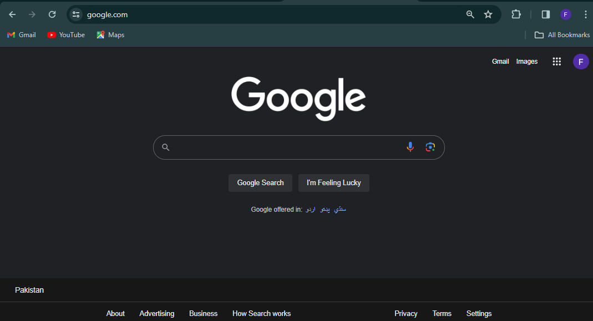

Web Designing
Introduction to Websites and Webpages
Here is some brief information about websites and webpages:
- Websites are big collections of webpages.
- Webpages are documents that are part of a website.
- Webpages are written in HTML (Hypertext Markup Language).

Creation of Webpages using HTML and CSS
Creating webpages involves using HTML for structure and CSS for styling:
- HTML(Hypertext Markup Language) provides the structure of the webpage.
- CSS (Cascading Style Sheets) is used for styling and layout.
- Combining HTML and CSS allows for the creation of visually appealing webpages.

Creation of Webpages using HTML and CSS
Creating webpages involves using HTML for structure and CSS for styling:
- HTML(HyperText Markup Language) provides the structure of the webpage.
- CSS (Cascading Style Sheets) is used for styling and layout.
- Combining HTML and CSS allows for the creation of visually appealing webpages.